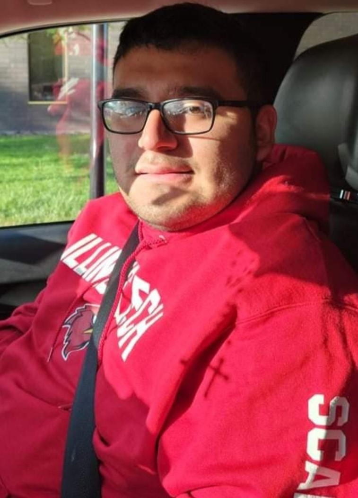

Introduction

Hello and welcome! My name is Emiliano Fregoso, and welcome to my page! This first page will be an introduction about myself.
Picture Slider
About Myself
- I was born here in Chicago and currently still live in this great city.
- I'm a huge fan of the Chicago Bulls, Blackhawks, and White Sox.
- I am a twin and the oldest child in my family.
- I love to spend time with my siblings and cousins when I have free time.
Hobbies
- I love to play video games. I have been playing since I was 6 years old. My favorite game of all time is MLB The Show 16.
- I also bake, creating dishes like flan, cookies, and currently a work in progress—cake.
- During my free time, I love to watch sporting events, either in person or on TV.
Education
- I'm a 2nd-year undergraduate student in Information Technology & Management.
- In the future, I plan to go into software management or get a certification in teaching.
- Recently, I earned my CompTIA A+ (220-1102) certification.